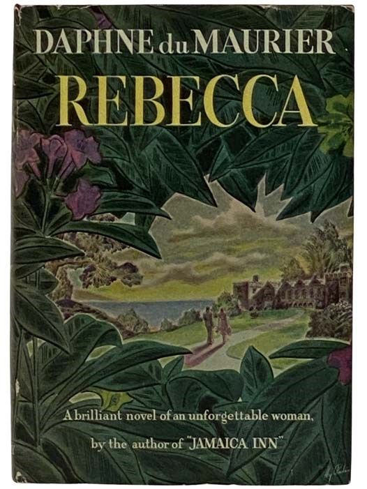

“I believe there is a theory that men and women emerge finer and stronger after suffering, and that to advance in this or any world we must endure ordeal by fire.”
“If only there could be an invention that bottled up a memory, like scent. And it never faded, and it never got stale. And then, when one wanted it, the bottle could be uncorked, and it would be like living the moment all over again.”
“I wondered how many people there were in the world who suffered, and continued to suffer, because they could not break out from their own web of shyness and reserve, and in their blindness and folly built up a great distorted wall in front of them that hid the truth.”
“If you think I’m one of those people who try to be funny at breakfast you’re wrong. I’m invariably ill-tempered in the early morning.”
